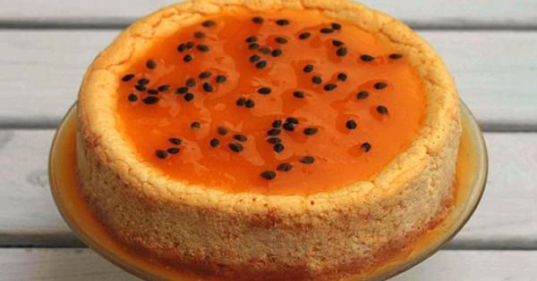

Natilla de Maracuyá
La natilla es un postre que se ve muy comúnmente en Europa, particularmente en España, donde suele hacerse a base de leche cortada; sin embargo, muchas modalidades de este postre se han creado a partir de los recursos más típicos de las distintas regiones de Sur América, en donde destaca Brasil. La gran gastronomía brasileña no solo es sofisticada, diversa y exclusiva, sino que tiene un amplio espectro de recetas comunes y fáciles de preparar, que no dejan de ser especialmente deliciosas. La Natilla de Maracuyá aprovecha una fruta tropical muy común en el país y la convierte en un delicioso postre para compartir.
Ingredientes
300 gr. de fécula de maíz.
3 cucharadas de panela orgánica en polvo
2 astillas de canela
8 maracuyás medianos
1 litro de leche descremada y deslactosada

2 horas
6
Instrucciones.
1
2
3
4
5